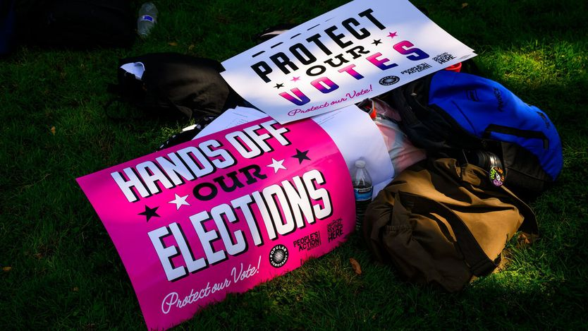
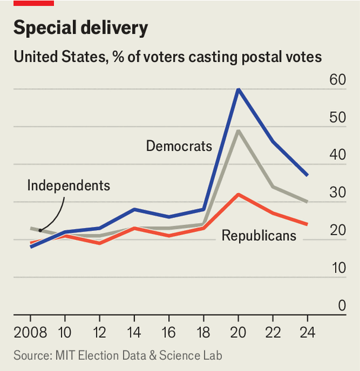

特朗普对邮寄投票的攻击正在失败
Donald Trump’s attacks on postal voting are failing
但他还有别的办法给中期选举添乱

- 背景：今年11月美国要举行中期选举，改选全部435名众议员和约三分之一的参议员。邮寄投票是民主党人使用比例明显更高的投票方式，特朗普长期声称（但拿不出证据）其中存在大规模舞弊，今年3月签署行政令，想把邮政总局从投递机构变成有权决定谁能邮寄投票的裁判者。
- 美国邮政总局上个月出台规定，要求把选票信封上的条形码与各州选民名单比对，可比对所用的在线系统根本还不存在。民主党、共和党执政的各州选举官员都认为这项规定无法执行。9月14日最高法院叫停了它，只有两名大法官公开反对。
- 特朗普阵营此前试图用行政令、诉讼和立法提案三条路改写投票规则，迄今没有一次成功。但作者提醒，真正的风险不在规则本身，而在11月计票前后可能出现的新动作。
- 作者的核心判断：总统已很难在选举前改动规则，却已经为「共和党万一败选」找好了替罪羊。与此同时，各州官员和民主党人正提前演练最坏情况——派联邦人员到投票站、扣押票箱、或施压拒绝认证计票结果。
堪萨斯州道格拉斯县的首席选举官杰米·休（Jamie Shew）最近接到其他县同行的电话，语气都相当焦虑：你那边有没有印条形码的人？在堪萨斯州全部105个县里，只有他这个县在所有邮寄选票信封上印了唯一条形码，因而符合美国邮政总局（USPS）上个月发布的一项规定。同行们担心，在11月中期选举寄出选票之前，自己只剩几周时间来照办。无论民主党还是共和党执政的州，选举官员都认为这项规定根本没法执行。
9月14日，最高法院出手叫停了这项规定——尽管它是按唐纳德·特朗普的指示起草的。特朗普本人虽然也用邮寄投票，却十分厌恶这种投票方式：民主党人比共和党人更常使用它，而特朗普在毫无证据的情况下声称其中舞弊横行。今年3月他签署行政令，试图把美国邮政总局从一个单纯的投递机构，变成一个有权决定谁能邮寄投票的裁判者。

结果，总统干预中期选举的这次尝试，与他此前那些以行政令、诉讼和立法提案重塑美国人投票方式的努力落得同样下场：没有一项立得住。但总统已经制造了混乱，也预先找好了替罪羊——一旦共和党今年11月丢掉众议院或参议院，他可以把责任推出去。
这项拟议中的规定要增加一道繁琐且从未经过检验的流程：邮政总局必须把信封上的条形码，与各州上传到一个尚不存在的在线门户网站上的选民名单逐一比对。选举官员警告说，这会造成大范围延误，并让大量选民失去投票权。一名举报人在写给民主党参议员的信中说，邮政总局的员工认为这套系统是「一坨烂摊子」。
最高法院本周的裁定用词没那么粗俗，只有两名大法官公开表示异议，裁定结果则是拦下了特朗普的这步棋。大法官们写道，如果进入完整的法律程序，特朗普很可能在「实体问题上」败诉。裁定援引的理由是：邮政总局的规则制定草率仓促，而且一旦执行很可能引发混乱，因此暂时维持现状。
看上去，总统已经没有办法在11月之前改动投票规则了。但这并不意味着他没有别的盘算。最突出的担忧有三个：总统可能派联邦执法人员到投票站恐吓选民；可能下令警方扣押票箱；也可能向亲「让美国再次伟大」（MAGA）阵营的选举管理者施压，让他们拒绝认证计票结果。
州政府官员、民主党国会议员和专打官司的非营利组织，已经花了几个月时间推演这些情景。参议院民主党人一直在与外部顾问举行桌面推演，参与者包括前司法部长埃里克·霍尔德（Eric Holder）。参与其中的「保护民主」（Protect Democracy）组织成员贾斯汀·维尔（Justin Vail）说，一旦出现上述任何一种情况，第一要务就是立刻上法庭。相关工作还包括培训县书记员——他们是投票站工作人员遇到问题时的第一联系人。
与此同时，选举官员还必须说服选民相信邮寄选票可靠。堪萨斯州举行初选时，休所在的县里，现场提前投票人数激增，其中五分之一的人此前一直是邮寄投票。■